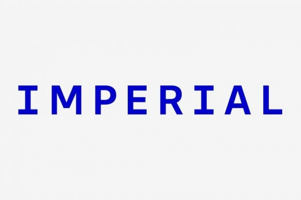
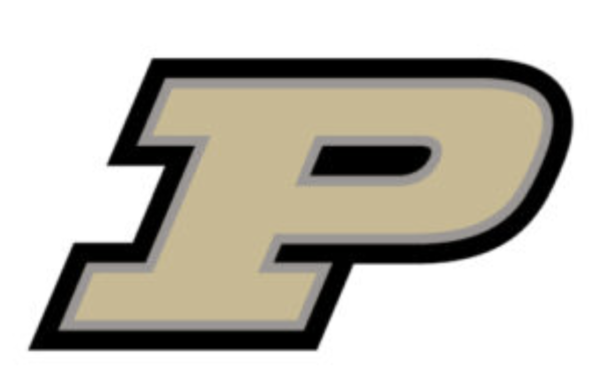

Mars compositional clay stratigraphies: spectral analysis (IDL/Python)
A pipeline for processing CRISM observations, mapping clay spectral features and extracting spectra from regions of interest.
IDL · Python · ENVI · Hyperspectral imaging
Hello and welcome to my page! My name is Athanasios (but my nickname is Thanos) and I am a British/Greek geologist and planetary scientist. I'm fascinated by planets, how they have evolved to their present states, and how we can detect this.
I completed my Bachelors and integrated Masters degrees in Geology at Imperial College in London, where I specialized in geologic mapping of Earth and Venus using VISIR, topography, and SAR datasets. In my PhD at Purdue University in the United States, I've developed further expertise in using multispectral and hyperspectral reflectance spectroscopy to investigate mineral deposits associated with igneous and aqueous alteration processes. As a member of the NASA Perseverance rover science operations team, I am trained in spacecraft operations, and I co-lead two science working groups.
Right now, I'm seeking remote sensing and geology roles across environmental, defense and industrial applications, including resource exploration. Available to work upon PhD completion, expected May 2027.


A pipeline for processing CRISM observations, mapping clay spectral features and extracting spectra from regions of interest.
IDL · Python · ENVI · Hyperspectral imaging
Science operations, working group leadership and multispectral analysis of igneous and sedimentary materials in Jezero crater.
VNIR spectroscopy · Mineral identification · Science operations